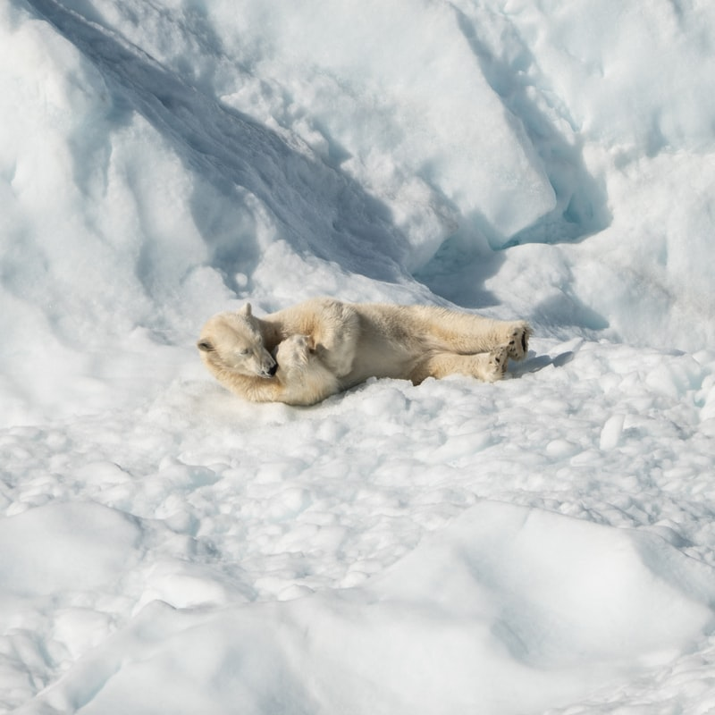

지상 최고의 포식자
백곰이라고도 한다. 몸길이 수컷 190~250cm, 암컷 170~250cm, 꼬리길이 8~10cm, 어깨높이 120~140cm, 뒷발길이 30~37cm, 귀길이 9~15cm, 몸무게 수컷 300~800kg, 암컷 150~500kg이다. 암컷은 수컷보다 몸이 작다. 다른 곰보다 머리가 작고 목이 길며 귀는 작고 둥글다. 발바닥에는 털이 있으며 척구(蹠球)는 작아서 얼음 위를 걸어 다니기에 알맞다. 몸빛은 털갈이 직후에는 흰색이나 차츰 황백색으로 변한다. 어린 것은 어미보다 희끗희끗하다. 눈·코·척구는 검은색이다. 이빨은 38~42개이다. [네이버 지식백과] 북극곰 [Polar Bear] (두산백과)
